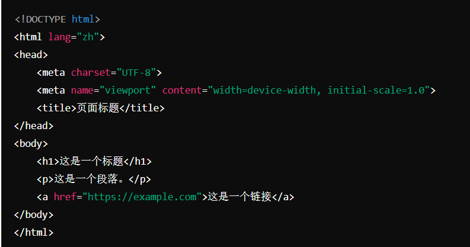

腾讯有一款收视率和
讨论度都很不错的素人电影。
GitHub Pages是GitHub为用户提供的免费托管静态网站的服务，使用github.io后缀是其标识的一部分。用户可以通过设置自定义域名（如www.yourdomain.com）来替代github.io后缀。要实现这一点，你需要购买一个域名并在GitHub Pages设置中进行配置。
This is a red paragraph.
我现在已经拥有了一个.html文件，但这个网页只能在本地文件系统上打开。要让HTML网页在互联网上可访问， 需要将其托管在服务器上。选择一个网站托管服务提供商，如GitHub Pages、Netlify或付费的虚拟主机服务。
